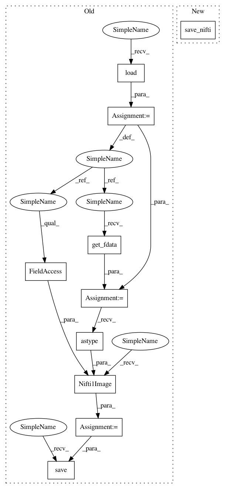

6d16dc2aa1d9bebe3d645824550baf5e65230b24,dipy/workflows/tests/test_stats.py,,test_stats,#,25
Before Change
def test_stats():
with TemporaryDirectory() as out_dir:
data_path, bval_path, bvec_path = get_fnames("small_101D")
vol_img = nib.load(data_path)
volume = vol_img.get_fdata()
mask = np.ones_like(volume[:, :, :, 0])
mask_img = nib.Nifti1Image(mask.astype(np.uint8), vol_img.affine)
mask_path = join(out_dir, "tmp_mask.nii.gz")
nib.save(mask_img, mask_path)
snr_flow = SNRinCCFlow(force=True)
args = [data_path, bval_path, bvec_path, mask_path]
After Change
volume, affine = load_nifti(data_path)
mask = np.ones_like(volume[:, :, :, 0], dtype=np.uint8)
mask_path = join(out_dir, "tmp_mask.nii.gz")
save_nifti(mask_path, mask, affine)
snr_flow = SNRinCCFlow(force=True)
args = [data_path, bval_path, bvec_path, mask_path]
In pattern: SUPERPATTERN
Frequency: 3
Non-data size: 10
Instances
Project Name: nipy/dipy
Commit Name: 6d16dc2aa1d9bebe3d645824550baf5e65230b24
Time: 2019-12-31
Author: skab12@gmail.com
File Name: dipy/workflows/tests/test_stats.py
Class Name:
Method Name: test_stats
Project Name: nipy/dipy
Commit Name: 6d16dc2aa1d9bebe3d645824550baf5e65230b24
Time: 2019-12-31
Author: skab12@gmail.com
File Name: dipy/workflows/tests/test_tracking.py
Class Name:
Method Name: test_local_fiber_tracking_workflow
Project Name: nipy/dipy
Commit Name: 6d16dc2aa1d9bebe3d645824550baf5e65230b24
Time: 2019-12-31
Author: skab12@gmail.com
File Name: dipy/workflows/tests/test_tracking.py
Class Name:
Method Name: test_particle_filtering_traking_workflows